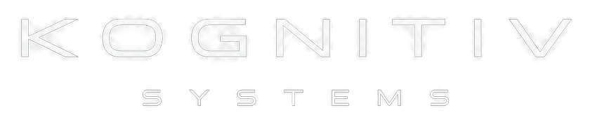

LOCAL-FIRST
Core functionality is designed to run close to the user, reducing dependency and keeping control where it belongs.
Independent AI Systems Lab · Switzerland
Kognitiv Systems builds private, local-first AI systems that can understand, automate and interact with the digital and physical world.
We build systems designed to do more than answer prompts. Kognitiv connects reasoning, memory, tools, voice, automation and real devices into one modular intelligence layer.
The goal is simple: AI that feels less like a website and more like a reliable system living beside you.
Core functionality is designed to run close to the user, reducing dependency and keeping control where it belongs.
Voice, memory, agents, devices and automation can evolve independently while still operating as one system.
Infrastructure is built around ownership, clear permissions and deliberate access — not blind data collection.
One intelligence stack. Multiple ways to interact with it.
A local AI operating system designed to see context, remember what matters, use tools and take action.
View system architecture ↗DISTRIBUTED INTERFACE
Compact voice and display nodes that extend AXON into rooms, workspaces and physical environments.
AI TELEPHONY
A communication layer for handling calls, routing requests and turning conversations into useful actions.
GAME AGENT
An experimental Minecraft agent built to join, assist and operate inside a live game world alongside the player.
From local inference to real-world interfaces, the stack is designed so every layer can work together.
Reason, choose tools and complete multi-step work.
Natural speech input, wake words and responsive audio output.
Agents that can interact with applications, files and workflows.
Connect AI with home automation, sensors and physical devices.
Context-aware monitoring, permissions and controlled response logic.
Exploring the bridge between software intelligence and physical action.
› core.identity
› core.mission
› core.mode
Founder & Owner
Product · AI Systems · VisionSoftware Engineer
Development · Systems · Implementation
We are building toward a future where intelligence is not trapped inside a chat window.
Kognitiv Systems is an independent technology project focused on AI systems, automation, security and robotics.